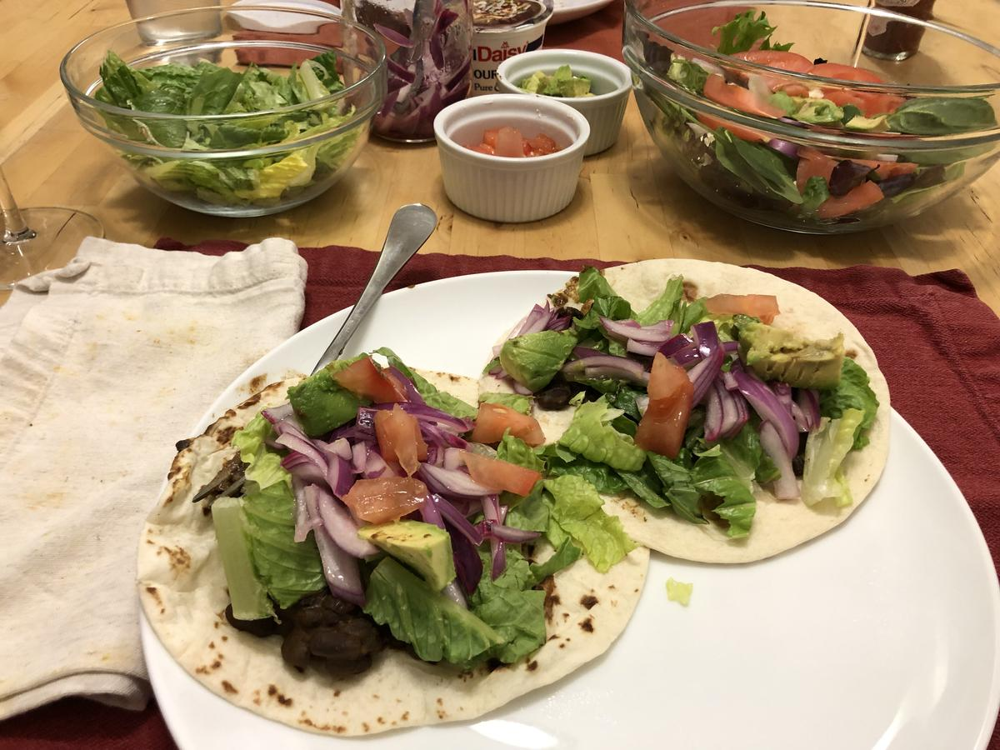

Based on https://www.washingtonpost.com/recipes/chili-lime-black-bean-tacos/17008
Personal rating: 4 / 5

4 scallions
1 red onion, thinly sliced
1/2 cup lime juice (from 2 or 3 limes)
1/4 tsp Kosher salt
~4 Tbsp extra-virgin olive oil
2x 15.5-ounce can no-salt-added black beans, with the liquid
2 tsp chili powder
2 tsp ground cumin
2 tsp Spanish smoked paprika (pimentón; sweet or hot)
1 tsp Dijon mustard
12 6-inch corn tortillas
2 cups chopped romaine lettuce (from 1 heart of romaine)
Hot sauce, such as Cholula
Other optional toppings including avocado, tomato, sour cream, etc